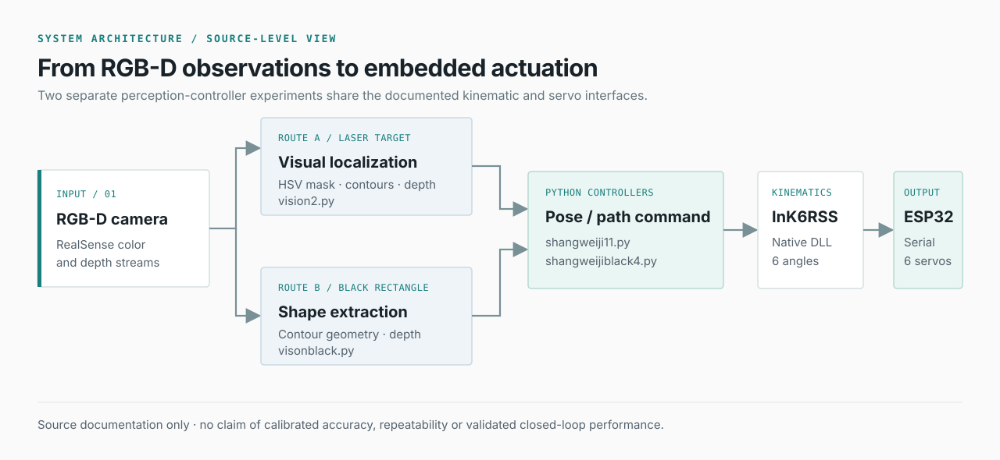

Vision-Guided Control of a 6-RSS Parallel Platform
An experimental six-actuator platform connecting RGB-D perception, inverse kinematics and embedded servo actuation.
基于 RGB-D 感知、运动学逆解与 ESP32 舵机控制的六自由度并联平台实验系统

Abstract
This project explores a vision-guided six-actuator parallel platform built around a PC-side perception and control pipeline and an ESP32-based servo interface. RealSense RGB-D streams feed two separate OpenCV experiments: laser-target localization and black-rectangle geometry extraction. Their corresponding Python controllers generate pose or trajectory commands, which are passed to the InK6RSS inverse-kinematics interface and transmitted over serial to six servo channels.
The repository documents the hardware–software integration and the evolution of several controller experiments. It is an educational engineering prototype: source-level interfaces are available, while calibrated end-to-end performance and repeatable hardware benchmarks have not been established.
Two source-level experiments.
The two visual inputs were developed as separate controller paths. The selector below explains their source modules and data flow; it is not a live camera feed or a hardware-control interface.
- 01HSV + contour detection
Red / white regions
- 02Pixel offset + depth
Camera-relative estimate
- 03Yaw / pitch setpoint
Experimental proportional logic
Source modules: vision2.py + shangweiji11.py
View source module ↗The visualization describes modules present in code. It is not camera footage, a running simulation or proof of calibrated closed-loop accuracy.
From camera frames to servo commands.
The implementation is organized around a small number of explicit software and hardware interfaces.
| Layer | Implementation | Source modules | Role |
|---|---|---|---|
| RGB-D acquisition | Intel RealSense · pyrealsense2 | vision2.py, visonblack.py | Color and depth frames |
| Perception | OpenCV · NumPy | vision2.py, visonblack.py | Target and rectangle features |
| Desktop control | Python · Tkinter · PySerial | shangweiji11.py, shangweijiblack4.py | Pose or trajectory commands |
| Inverse kinematics | InK6RSS native interface | InK6RSSV1.h, RSS6RBT_InverseDLL.dll | Six actuator-angle outputs |
| Embedded output | ESP32 · ESP32Servo | sketch_sep14a.ino | Serial parsing and six servo channels |
The native inverse-solver DLL is included in the historical repository, but its provenance and redistribution terms have not been verified.
Physical demonstration footage.
The original recording will be added after the source video is located and reviewed. No synthetic animation is presented as a real experiment.
Hardware demonstration video to be added.
Planned footage: physical platform · perception interface · commanded motion · servo responseEngineering prototype, not a validated control package.
The public source documents integration intent and implemented module boundaries. End-to-end hardware execution has not been independently revalidated for this showcase, and no quantitative claims are made for tracking accuracy, latency, stability or trajectory performance.
Camera-to-platform coordinates and depth-to-displacement conversion require calibration. The repository contains historical controller variants, and the native inverse-solver DLL requires provenance and licensing review. Servo limits, mechanical interference, power and emergency-stop behavior must be checked before hardware operation.